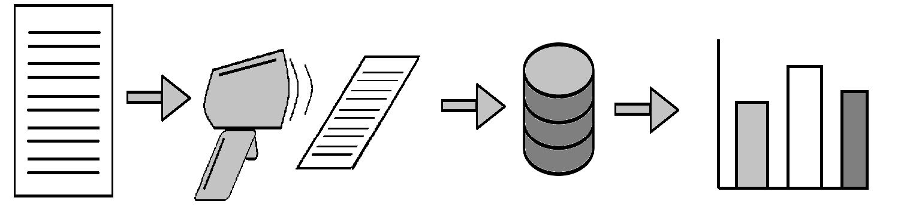

Pen and Paper
Track absence worldwide, using only pen and paper
About the project
What is Pen and Paper?
Pen and paper is a model for tracking attendence at schools at areas with little or no infrastructure.
It is cheap and reliable, and has theese four steps:
- The teacher registers absence with a spred sheet.
- The spreadsheet is scanned with text-to-image technology, and sends it to a server.
- The server puts the information to a database, making the information digital.
- With the gathered information, you can now visualize it, feed it to an AI, or anything else
- you want, in order to track school attendences
